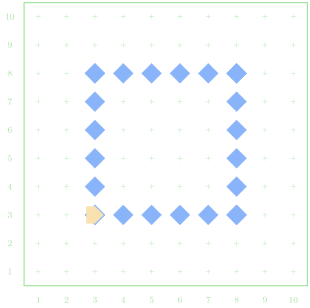
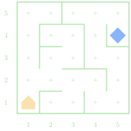
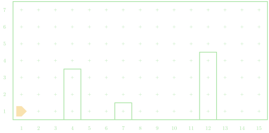
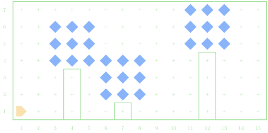

Planning for
Solutions
Jed Rembold
January 21, 2026
Welcome to Wednesday!
- Scan the QR code or go to https://classroomtools-production.up.railway.app/daily
- Class code is
yDzKvf - Introduce yourselves! Fun question: what is your favorite recipe?

Quick Announcements
- Ensure you have the tech installed on your system!
- Sections today or tomorrow! Make sure to attend!
- Should have gotten an email from me telling your when and where to meet
- Bring your laptops to your section
- Problem Set 1 is due next Monday night
Group Problems
Problem 1: Building Boxes
- Suppose Karel starts in the bottom left corner, facing East, in a 10 by 10 world with an infinite amount of beepers in their bag
- Goal is to create a 6x6 grid of beepers in the center
- What needs to be repeated a known amount of times?
- Have a member of your group email me your solution. Just copy and paste into the email body.

Fenceposts
- Often times, when you need to take two actions in a loop, one might
be off by one from the other
- Called the fencepost problem
- Need to place down 6 beepers in a row, but that only requires moving 5 times
- You can always add a correction term before or at the end of your loop to account for the last action!
Problem 2: An Amazing Algorithm
- Consider a simple, loop-less, maze that we want to move through
- Karel could start anywhere
- The end of the maze is a beeper
- A common algorithm to get through the maze is to “always follow or
touch the wall to your right”
- How could you phrase this in language Karel would understand?
- Implement this, and test it against the example mazes.

Live-Coding
Spring Decor
- Karel is gearing up for Spring by adding leaves back to the top of barren trees
- There are 3 trees in Karel’s yard they want to refoliage
- Trees are one block wide and could be any height
- Refoliaging a tree means adding a 3x3 block of beepers on top
Visual Start

Visual Finish

A Solution
import karel
def main():
"""Refoliage 3 trees"""
for i in range(3):
find_next_tree()
refoliage_tree()
def find_next_tree():
"""Moves Karel to the base of a tree
Algorithm: move forward until tree in face
"""
while front_is_clear():
move()
def refoliage_tree():
"""Add leavese back to the top of the tree
Algorithm: climb tree, add leaves, descend tree
"""
climb_tree()
add_leaves()
descend_tree()
def climb_tree():
"""Climbs one tree to the top
Algorithm: reorient to face upwards, climb until no tree to
my right
"""
turn_left() # face upwards
while right_is_blocked():
move()
def add_leaves():
"""Adds leaves to the top of a tree
Algorithm: move up to top of leaves, and then snake way
across top and back to end up in bottom right
"""
for i in range(2): #Already one above the top of the tree
move()
turn_right()
add_leaf_row() #top
turn_right() # Make first corner
move()
turn_right()
add_leaf_row() #middle
turn_left() # Second corner
move()
turn_left()
add_leaf_row() #bottom
def add_leaf_row():
"""Adds a row of 3 leaves
Algorithm: Place one beeper first to avoid fencepost problem,
then loop twice
"""
put_beeper() # Beepers across bottom
for i in range(2):
move()
put_beeper()
def descend_tree():
"""Positions and moves back down the tree to the ground
Algorithm: orient downwards, move until group, and then
orient to east
"""
while not_facing_south():
turn_left()
while front_is_clear():
move()
turn_left()
def turn_right():
"""Turns Karel to the right"""
for i in range(3):
turn_left()